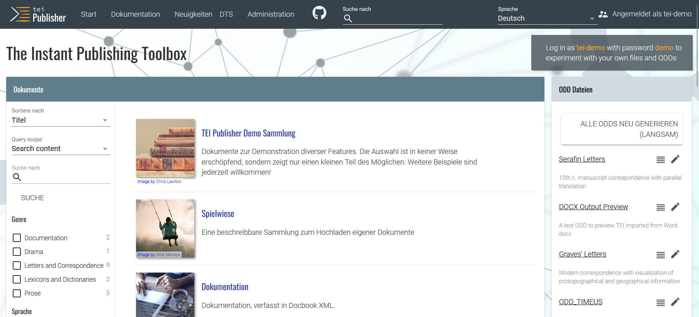
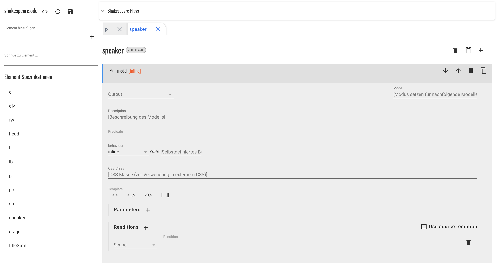
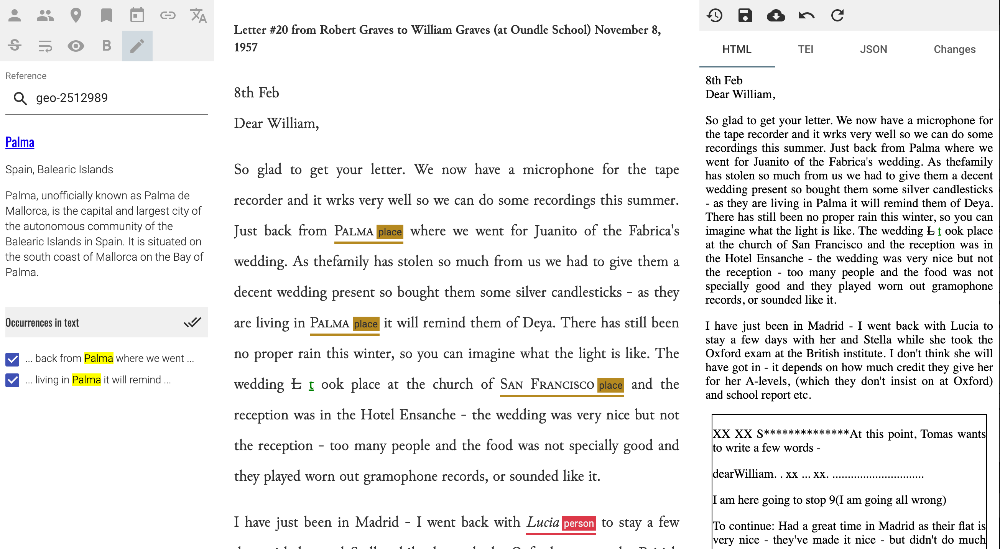
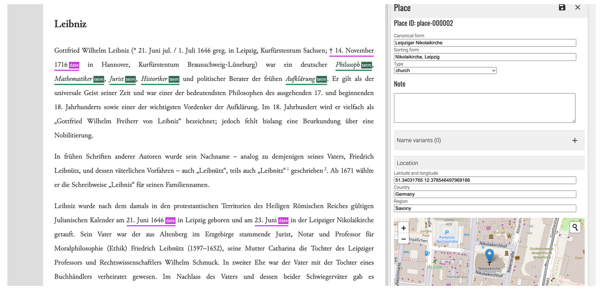
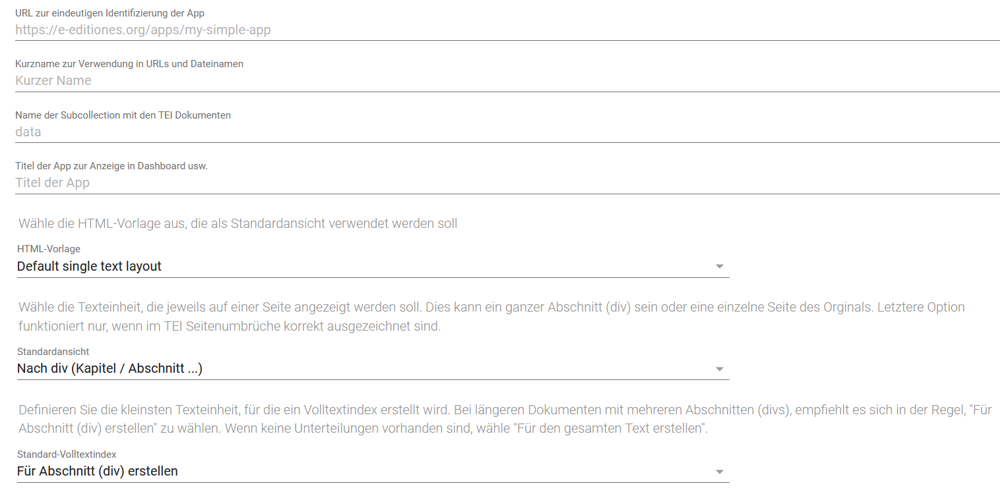
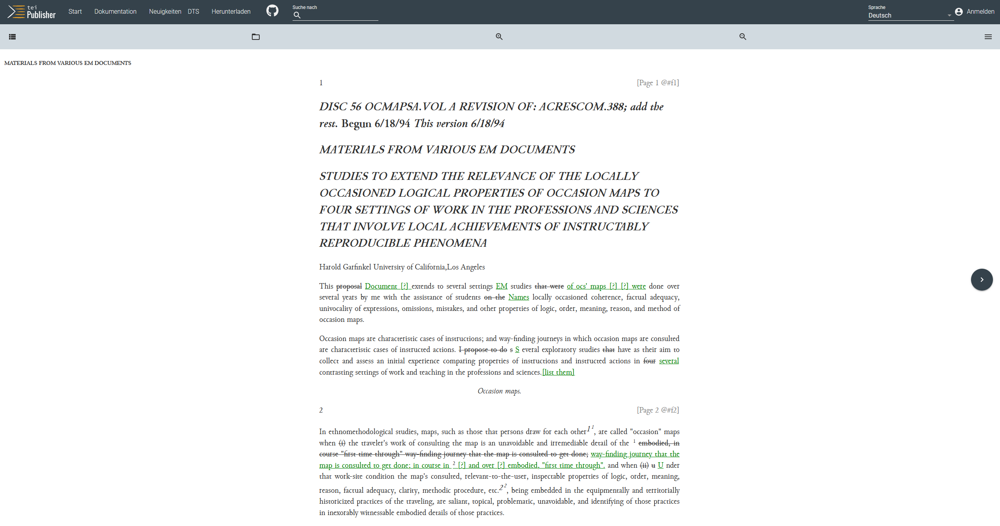
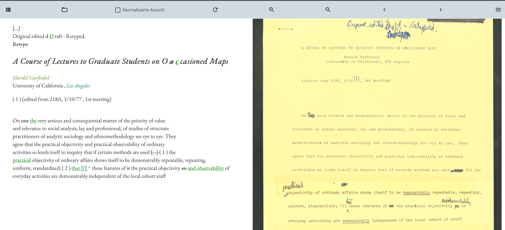
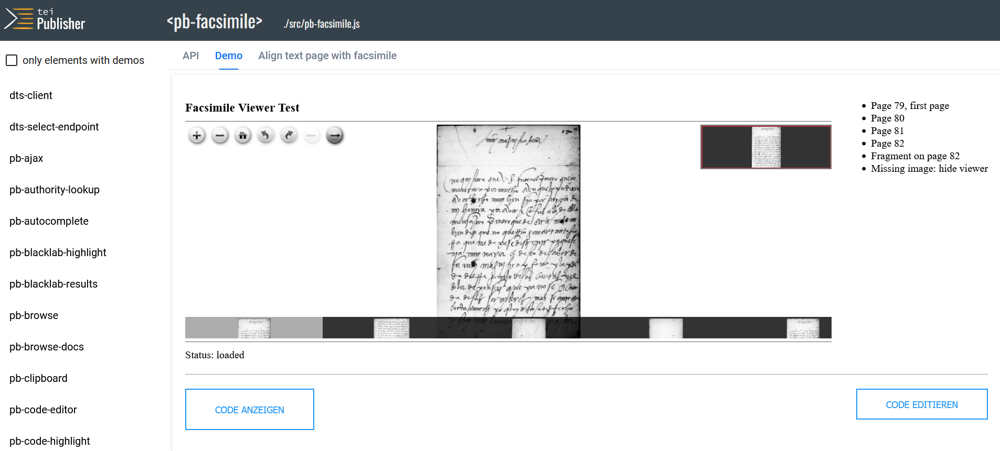
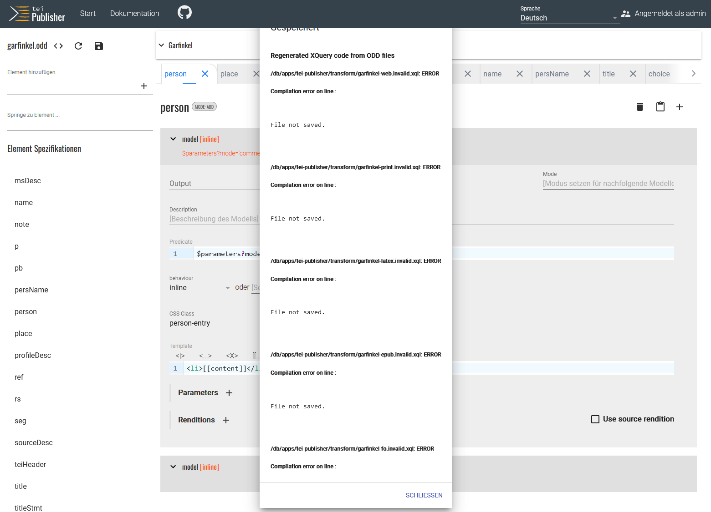
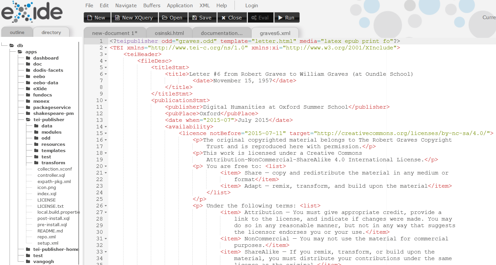

TEI Publisher
Table of Contents
Abstract
The TEI Publisher is an open-source tool designed to simplify the publication of TEI encoded texts for researchers without extensive programming knowledge. It allows users to transform XML data into web-based digital editions using predefined templates and custom styles. Developed by eXist-Solutions, it integrates with the eXist-db XML database to store and organize data, offering flexibility for different use cases. Initially launched in 2015, the tool is under continuous development, with regular updates introducing new features and improvements. In this review, we examine how TEI Publisher balances ease of use with deep customization options. We demonstrate how scholars are empowered to produce digital editions rapidly and how researchers can experiment with various re-presentations of their data using a graphical interface and a set of predefined configurations. We also discuss how, while it lowers barriers for less technical users, it nevertheless requires a solid understanding of TEI and proficiency with XML technologies for more complex customization. Using a small practical example, we will demonstrate some of the core functions of the TEI Publisher and highlight both the advantages and drawbacks affecting its presentation and usability. TEI Publisher proves to be a mature and easy-to-use tool for projects with moderate technical demands, suited for researchers seeking rapid results. However, it falls short in accessibility, citability, and adaptability for highly customized use cases, revealing areas for future improvement in usability and inclusivity.
Eröffnung des Reviews
Die ReviewerInnen
Die Rezension über den TEI Publisher wurde von zwei AutorInnen verfasst. Mit ihrem abgeschlossenen Bachelorstudium der Kulturwissenschaften sowie dem absolvierten Masterstudium der Editions- und Dokumentwissenschaften, hat die Autorin fachlich einen geisteswissenschaftlichen Hintergrund. Das Abschlussprojekt der Masterarbeit setzte sie im Sommer 2019 mit dem TEI Publisher um. Am Lehrstuhl für Digital Humanities an der Bergischen Universität Wuppertal hat sich die Autorin verstärkt mit digitalen Technologien, Tools und Publikationsworkflows auseinandergesetzt. Die Reviewerin ist in diesem Sinne keine Webentwicklerin, sondern eine klassische Userin des rezensierten Tools.
Der Co-Autor hat nach einem Bachelor in Anglistik und Wirtschaftswissenschaft ebenfalls den Master der Editions- und Dokumentwissenschaft abgeschlossen und arbeitet seit 2016 in den Digital Humanities. Zunächst am Cologne Center for eHumanities, seit 2020 am Lehrstuhl für Digital Humanities an der Bergischen Universität Wuppertal hat er an mehreren Projekten mitgearbeitet, deren Kern die Publikation von XML Daten war und dabei auch mehrere Portale mit eXist-db erstellt und administriert.
Identifizierung des Tools
Der TEI Publisher identifiziert sich selbst als sogenannte Instant Publishing Toolbox.1 Benannt wird das Tool häufig in abgekürzter Form als Publisher. Das Ziel ist es, den ForscherInnen und WissenschaftlerInnen mit dem TEI Publisher ein effizientes und robustes Tool an die Hand zu geben, das ohne umfangreiche Programmierkenntnisse die Publikation von Daten und Quellen ermöglicht.2 Im Rahmen der produktiven Arbeit mit dem TEI Publisher können NutzerInnen mehrere vorgefertigte Templates sowie Konfigurations- und Transformationsskripte selbst konfigurieren. Für individuelle Zwecke und je nach Projektkontext kann die technische Infrastruktur des TEI Publisher also bis zu einem gewissen Umfang angepasst werden. „TEI Publisher allows you to publish XML without becoming a programmer and without pushing you into a one-size-fits-all framework.“3 Mit dem TEI Publisher lassen sich vereinzelt umfangreiche Programmierarbeiten reduzieren, sodass auch erfahrene WebentwicklerInnen von diesem Tool profitieren können.
Entwickelt wurde der TEI Publisher von eXist-Solutions,4 einer GmbH, die technischen Support, Beratung, Schulung und Hosting für eXist-Datenbanksysteme anbietet und inzwischen auch aktiv bei der Weiterentwicklung des TEI Publishers mitwirkt. „Full service for all your eXist-db and TEI Publisher needs.“5 Zu den primären EntwicklerInnen zählen Magdalena Turska und Wolfgang Meier. Vor der produktiven Arbeit mit dem TEI Publisher ist zunächst die Einrichtung einer XML-Datenbank (eXist-db) erforderlich. Sie dient als storage engine für jegliche eXist-Anwendungen. Über den „Package-Manager“, eine Art „App-Store“ für eXist-Anwendungen, kann der TEI Publisher als Webapplikation heruntergeladen werden. Als Backend speichert und organisiert eXist-db die Daten in mehreren collections. Die Versionsnummer des TEI Publisher wird bei der Installation automatisch angegeben. NutzerInnen können im Vorfeld nur bedingt selbst bestimmen, welche Version dieses Tools sie einrichten und verwenden möchten. Die Versionsnummer des TEI Publisher muss kompatibel mit der Version der Datenbank sein, wie in dem projekteigenen GitHub-Repository hingewiesen wird: „Important: TEI Publisher from version 5.0.0 requires eXist-db 5.0.0 or later.“6 In dem Repository wird auch das Veröffentlichungsdatum einer jeden Version des TEI Publisher dokumentiert. Das Repository ist zugleich globaler Speicherort für sämtliche Ressourcen der EntwicklerInnen. Hier werden alle Änderungen, Revisionsschritte und Updates dokumentiert und veröffentlicht.
Stand der Entwicklung

Bestimmung der Entwicklungsumgebung
Zum Zwecke dieses Reviews wurde der TEI Publisher vornehmlich auf Windows und Mac Systemen, zum kleinen Teil auch auf einem Linux (Ubuntu 22) System benutzt. Der TEI Publisher als Applikation auf Basis von eXist-db ist plattformunabhängig. Unterschiede ergaben sich lediglich in der Installation von eXist-db.
Allgemeine Einführung in das Tool
Die Motivation hinter der Entwicklung des TEI Publisher liegt darin begründet, ein Werkzeug zur Verfügung zu stellen, das es WissenschaftlerInnen ermöglicht, ihre Quellen in digitaler Form und ohne umfassende Programmierkenntnisse zu veröffentlichen. Auch erfahrene EntwicklerInnen sollen von dieser Software profitieren, indem sie weniger Code schreiben müssen, dadurch Redundanzen vermeiden und somit Wartung sowie Interoperabilität verbessern können. Zentrale Aspekte in der Vision des TEI Publisher sind ein hohes Maß an Standardisierung, Modularität, Wiederverwendbarkeit sowie Nachhaltigkeit.
Der TEI Publisher ist ein Gemeinschaftsprojekt, das auf Ideen und Beiträgen von TEI-Enthusiasten aus aller Welt basiert. Ursprünglich inspiriert von der Vision hinter dem TEI-Processing-Model13 und dem TEI-Simple-Projekt14 aus dem Jahr 2015, hat es sich zu dem entwickelt, was es heute ist: Eine Instant Publishing Toolbox, die eine einfache und unkomplizierte Datenpublikation auf Basis von XML-TEI in mehreren Exportformate ermöglichen soll. Laut Aussage der EntwicklerInnen ist der TEI Publisher kein kommerzielles Projekt, denn im Fokus steht der Open Source-Gedanke. Der TEI Publisher sei ein wichtiger Schritt in Richtung Interoperabilität, Wiederverwendbarkeit und Nachhaltigkeit. Um diese Ziele weiter voranzutreiben und damit auch eine breitere Öffentlichkeit davon profitieren kann, schlossen sich im Mai 2020 eine Reihe kleinerer und größerer Editionsprojekte, kulturbewahrende Institutionen und einzelne ForscherInnen zusammen, um e-editiones15 zu gründen. E-editiones ist ein Verband, der Akteure aus Forschung und Wissenschaft, die in den Bereichen der digitalen Geisteswissenschaften, Editionswissenschaft und der Informatik tätig sind, zusammenbringt. Im Fokus steht die Unterstützung digitaler Projekte durch die Förderung offener Standards und gemeinschaftlicher Kooperationen mit dem letztendlichen Ziel, den Fortbestand von Editionen bis weit in die Zukunft zu sichern.16 E-editiones wartet und pflegt auch den Sourcecode des TEI Publisher und koordiniert dessen Entwicklung in dem hier bereits vorgestellten GitHub-Repository.
Finanzierung
Der TEI Publisher wurde mit Beiträgen anderer NutzerInnen der Öffentlichkeit als freie Software entwickelt und für Forschungszwecke zur Verfügung gestellt. Eine Vielzahl von privat und öffentlich finanzierten Projekten haben ebenfalls Unterstützung geleistet. Hinter allem steht, wie bereits erwähnt, der Verein e-editiones, der digitale Projekte durch die Förderung offener Standards unterstützt. Das Resultat dieser gemeinschaftlichen Zusammenarbeit ist eine lebhafte und gut vernetzte Community, die hinter dem TEI Publisher steht.
Ein weiterer Weg der Finanzierung, z.B. für Wartung und Entwicklung von Software wie eXist-db oder dem TEI-Publisher, läuft über Projektaufträge. „TEI Publisher's development so far was mainly funded by projects having concrete publication needs.”17 Darüber hinaus, bietet die Entwickler-Community ihre Unterstützung bei der Planung und Umsetzung von Editionsprojekten an: „If you have a digital edition to publish and would like to give TEI Publisher a try, contact us [...] and we commit to port any feature with more general interest back to the TEI Publisher.“18 Auf der offiziellen Projektwebsite wird transparent gemacht, in welchen preislichen Kategorien sich potenzielle Interessenten befinden und unter welchen Bedingungen, z.B. je nach Umfang der technischen Anforderungen, einen Preisnachlass auf spezielle Anfragen gibt:
Starting with TEI Publisher 5.0, we provide a special offer: Pass us your TEI data and we'll invest 5 full days to create a working prototype of your digital edition for a total price of € 5000 and earmark 10% of that for further TEI Publisher development. How much can be achieved in just a few days? Since TEI Publisher is all about code reuse, we can achieve a lot given that the quality of the underlying data allows it [...]19
Um exemplarisch zu zeigen, was in kurzer Zeit möglich ist, wird auf eine mit dem TEI Publisher umgesetzte digitale Edition der Van Gogh Letters20 verwiesen, die ein ausgewähltes Corpus der Briefe des Künstlers Van Gogh inklusive Transkriptionen und Faksimiles in synoptischer Ansicht visualisiert. Erstellt wurde diese Edition auf Basis von Version 5.0.0.
Transparenz
Die Dokumentation21 ist sehr umfangreich, wird stetig erweitert und enthält viele Beispiele und Referenzen. Sie bespricht Probleme und gibt technische Hinweise, auf die NutzerInnen im Rahmen der produktiven Arbeit mit dem TEI Publisher achten sollten. Die Dokumentation kann sowohl online eingesehen als auch in verschiedenen Exportformaten oben im Menü via Klick auf „Download“ heruntergeladen werden. Als ersten Einstieg bietet die offizielle Website des TEI Publisher mehrere Demo-Projekte,22 damit sich NutzerInnen einen Überblick verschaffen können, um zu sehen, was mit dem TEI Publisher als Tool möglich ist. Die technische Dokumentation im GitHub-Repository23 ist ausführlich und wird stetig aktualisiert. Das betrifft sowohl die Ressourcen, als auch die textuellen Erläuterungen in der Readme-Datei, die z.B. durch den Installationsprozess führen. In dem Repository auf GitHub wird auch auf Lizenzen24 Bezug genommen, unter denen sämtliche Software, darunter auch der TEI Publisher, betrieben wird. Damit verknüpft sind auch die Bedingungen, unter denen der Publisher und seine Komponenten verwendet werden dürfen. Lizenziert ist der TEI Publisher unter der GPLv3-Lizenz.25 Ist von Seiten der NutzerInnen die Verwendung in einem anderen Kontext beabsichtigt, was möglicherweise ein anderes Lizenzmodell erforderlich macht, bitten die Verantwortlichen um eine Kontaktaufnahme, damit hier eine Lösung gefunden werden kann.
Der Umfang der Informationen zu sämtlichen Bereichen rund um den TEI Publisher ist beachtlich und daher positiv zu bewerten. Die Art der Bereitstellung ist jedoch z. T. verwirrend und nicht immer nachvollziehbar. So widersprechen sich beispielsweise die Angaben zur Version in dem Blog von e-editiones (8.0.0)26 und in der Rubrik „News“ auf der Startseite (8.0.0)27 im Vergleich zur Testversion (8.1.0)28. ForscherInnen, die eine produktive Arbeit mit diesem Tool in Erwägung ziehen, werden im Unklaren gelassen, wann welche Version der Publisher-App zur Verfügung steht.
Methoden und Implementierung
Problemstellung und Alternativen
Das grundlegende Problem, für das der TEI Publisher eine Lösung anbieten möchte, ist eines, das sich in vielen Projekten stellt: In TEI erfasste Textdaten und ein entsprechendes Datenmodell liegen vor oder das Projekt befindet sich womöglich noch im Prozess der Exploration und Datenmodellierung. Konzeptionell besteht bereits eine Vision von einer Präsentationsebene sowie einer Editionsansicht und gesucht wird nun der schnellste und einfachste Weg dorthin. Gleichzeitig sollte der Prozess so flexibel und anpassbar sein, dass spezifische Anforderungen (und die gibt es in fast jedem geisteswissenschaftlichen Projekt) realisiert und auch komplexe TEI-Datenmodelle repräsentiert und verarbeitet werden können. Trotz dieser Ansprüche ist in vielen Projekten oft jedoch keine dedizierte oder nur eine begrenzte Stelle für einen Entwickler vorgesehen. Darüber hinaus erlauben die Projektrealitäten keine langen und teuren Entwicklungsprozesse über die begrenzten Projektkontexte hinaus. Der klassische Weg wäre entweder die eigene Entwicklung einer Webapplikation auf Basis einer XML-Datenbank wie eXist-db oder Base-X oder die Erstellung einer statischen Webseite. Beide Wege sind in der oben skizzierten Situation oft nur schwer umsetzbar und erfordern von den Projektmitarbeitenden gute Kenntnisse sowohl im Bereich der „X-Technologien“ (XPath, XSLT, XQuery) und in der Webentwicklung die, sofern eben keine vollwertige Entwicklerstelle vorhanden ist, erst erarbeitet werden müssen. Dieses Problem ist seit langer Zeit Thema in den gerade kleineren Forschungsprojekten und es wurde immer wieder Bedarf für eine niedrigschwellige Lösung geäußert. In ihrer Vorstellung der TEI Archiving, Publishing, and Access Service (TAPAS) im TEI Journal berichten 2013 z.B. schon Julia Flanders and Scott Hamlin: „Following a TEI workshop at Wheaton College, participants reflected on the fact that learning and creating TEI data seemed to lie well within their grasp, but publishing that data seemed to depend on institutional resources (server space, programmer time, XML publishing expertise) that they could not count on.“29
Schaut man sich aktuelle Entwicklungen an, versuchen neben dem TEI Publisher auch andere Tools an diesem Punkt anzuknüpfen und Projekte in diesen Phasen des Workflows zu unterstützen - mit jeweils unterschiedlichen Herangehensweisen, Zielgruppen und use-cases.
Die Software EVT (Edition Visualization Technology) beschreibt sich selbst als „light-weight, open source tool specifically designed to create digital editions from XML-encoded texts, freeing the scholar from the burden of web programming and enabling the final user to browse, explore and study digital editions by means of a user-friendly interface.“30 Das Tool wurde im Rahmen des Digital Vercelli Book Projektes entwickelt und liegt bereits in Version 2.0 vor.31 EVT positioniert sich zunehmend als generisches Tool für verschiedene Formen von digitalen Editionen.32 Der spezifische Fokus liegt hier auf der synoptischen Darstellung verschiedener Textansichten und des Faksimiles, also den Anforderungen einer klassischen historisch-kritischen Editionspraxis. Technisch realisiert ist die Software von EVT als Open-Source Web Applikation auf Basis von JavaScript. Wie im Namen bereits ersichtlich, liegt der Schwerpunkt primär darauf, EditorInnen bei der Arbeit mit und der Analyse von Dokumenten zu unterstützen und dafür eine leistungsfähige Visualisierung anzubieten. Eine finale Publikationsplattform für Projekte zu erstellen steht somit nicht im Vordergrund.
Als weitere Entwicklung in diesem Bereich sei das Modul ediarum.WEB zu nennen, welches von der Berlin-Brandenburgische Akademie der Wissenschaften (BBAW) im Rahmen des ediarum-Projekts als Publikationsmodul entwickelt wurde. Dies bietet die Möglichkeit, Daten, die mittels des ediarum-Frameworks erstellt und verwaltet werden, innerhalb einer eXist-db-App zu veröffentlichen. Im Gegensatz zum TEI Publisher positioniert sich ediarum.WEB noch deutlicher als Werkzeug und Programmbibliothek für EntwicklerInnen („library for eXist-db“33 ) und weniger als out-of-the-box Lösung für ForscherInnen.
Methodologie und Funktionsweisen

Weitere Elemente, die im Rahmen des Transformationsprozesses eine Rolle spielen, sind CSS-Stylesheets und HTML-Templates. In diesen Dateien wird die Darstellung der mit ODD transformierten Dokumente definiert. Auch hier stellt der TEI Publisher viele Beispiel-Templates bereit, mit denen unterschiedliche Layouts und Darstellungsformen mit den projekteigenen Daten getestet werden können. Für deren Anpassung gibt es allerdings keine grafische Oberfläche, hier muss also im Texteditor gearbeitet oder extern erstellte CSS- und HTML-Dateien importiert werden. Innerhalb der Templates können zusätzlich sogenannte, mit JavaScript realisierte Webcomponents genutzt werden. Diese Webcomponents sind in der Lage, interaktive und dynamische Funktionen und Features zu erzeugen.
Die grundlegende Methodologie lässt sich dahingehend zusammenfassen, dass die Verarbeitung von TEI-Daten mittels ODD, Templates und Stylesheets unterstützt und dadurch den BenutzerInnen in erster Linie die Möglichkeit gegeben wird, mit verschiedene Darstellungsformen zu experimentieren bevor dann in einem nächsten Schritt die gezielte Anpassung und Weiterentwicklung vorgenommen werden kann.


Die experimentelle Unterstützung für die Erkennung und Markierung von benannten Entitäten in Texten (Named Entity Recognition) ist erst mit Version 8 des TEI Publisher möglich. In Version 9.0.0 wurden ein neues, ergonomischeres Layout sowie ein erweiterter Funktionsumfang für die Kuration ortsbezogener lokaler Register eingeführt (Abb. 5). Der Annotations-Editor ist nicht dazu gedacht, Dokumente von Grund auf neu zu erstellen. Er zielt auf „eine der mühsamsten und zeitraubendsten Aufgaben in jedem Editionsprojekt ab: das Hinzufügen von semantischen, analytischen oder textkritischen Markierungen zu einer bestehenden Transkription.“38 Die Arbeit der RedakteurInnen soll über den webbasierten Annotationseditor des TEI Publisher durch die automatische Identifizierung potenzieller Kandidaten für Personen und Orte vereinfacht werden. Um die Erkennung von Named-Entities im Annotationseditor verfügbar zu machen, ist ein separater Python-Dienst nötig. In dem entsprechenden Abschnitt der Dokumentation ist ein Verweis zum tei-publisher-ner Repository verlinkt.39 Dort können NutzerInnen das Repository gemäß den Anweisungen in der Readme-Datei klonen, um die API in der eigenen Instanz für die Erkennung von Entitäten im Eingabetext und Skripte für das Training von Entitätserkennungsmodellen nutzen zu können. Mit einem zusätzlichen Analysetool wie dem Annotationseditor ist der Grundstein für die weitere, tiefergehende Auseinandersetzung mit den Quellen gelegt, z.B. für eine (geografische oder personenbezogene) Netzwerkanalyse.
Input- und Output
Der TEI Publisher startete als Publishing Toolbox für TEI-Daten. Die Prinzipien des TEI Processing Model waren jedoch nie auf ein einziges Vokabular beschränkt. Der TEI Publisher hat seine Unterstützung sehr schnell auf andere XML-Formate ausgeweitet. Derzeit werden TEI, DocBook, JATS und MS Word DOCX unterstützt. Diese werden dann automatisch vom TEI Publisher mithilfe von dafür ausgelegten ODD Dateien in TEI XML konvertiert. Komplexeres Markup wird hier also nicht mit konvertiert und erfasst, wie es z.B. bei eigenständigen Tools wie TEI Garage geschieht.40 Um ein äquivalentes Ergebnis z.B. für docx Dateien zu erzielen, müssen die für die Konvertierung genutzten ODD Daten individuell angepasst werden. Laut Dokumentation ist es eine bewusste Entscheidung gewesen, bei der Konvertierung zunächst den Fokus nur auf die Textinhalte und grobe Struktur zu legen um die resultierende TEI-Datei nicht mit unnötigen Elementen und Attributen zu überfrachten und komplexeres Markup den Anpassungen der Nutzer zu überlassen.41 Die Basis für die Arbeit mit dem TEI Publisher sind dennoch überwiegend valide TEI-Daten. Eventuell schon vorhandene ODD-Daten oder Stylesheets können ebenfalls als Input in die Instanz des TEI Publisher dienen. Innerhalb des TEI Publisher können diese weiter bearbeitet oder von Grund auf neu erstellt werden. Die als Input in den TEI Publisher eingespeisten Daten können wiederum in andere Ausgabeformate (Output Media Settings), wie z.B. PDF und epub exportiert werden.42 Der TEI Publisher unterstützt somit verschiedene Ausgabemedienformate und übersetzt Stile mit dem Attribut @output in das entsprechende Zielformat. Die Qualität der erzeugten Ausgabe kann allerdings je nach Art des Eingabedokuments im Fo- und Latex-Modus unterschiedlich sein, wie in der Dokumentation hingewiesen wird. Auch hier scheint der Output zunächst weniger detailliert zu sein, als bei den für diese Art von Transformation dedizierten Tools wie TEIGarage, erlaubt aber auch hier eine individuelle Anpassung,

Diese separate Applikation, die in der eXist-db-Instanz generiert und auf dem Dashboard der Datenbank angezeigt wird, kann unabhängig vom TEI Publisher distribuiert werden. Es ist also möglich, eine voll funktionsfähige Anwendung zu exportieren, die dann auf einem eigenen Server bereitgestellt werden kann.
Die Performance der Applikation ist abhängig von der Performance der eXist-db-Instanz, auf der der TEI Publisher installiert ist. Diese ist wiederum abhängig von den Systemressourcen und der Konfiguration des jeweiligen Servers. Die Darstellung von einzelnen XML-Daten und auch die facettierte Suche der meisten Korpora verläuft dank der von eXist-db durchgeführten Indizierung schnell und unproblematisch. Erfahrungsgemäß gibt es erst bei größeren Datenkorpora und komplexeren Queries in der XML-Datenbank Einbrüche in der Performance von eXist-db. Zu diesem Zeitpunkt müsste dann von einem erfahrenen Entwickler manuelle Optimierungsarbeit geleistet werden.44
Praxisbeispiel: Erstellung einer Minimaledition

Als nächsten Schritt in der Reihe der Anpassung können z.B. eine eigene ODD mit eigenen Rendering-Befehlen erstellt werden. Eine Überlegung war auch, eine bereits vorhandene ODD zu kopieren und den eigenen Anforderungen anzupassen. In dem hier gezeigten use-case wurde eine bereits bestehende ODD kopiert und mit Hilfe des grafischen ODD-Editors neue Regeln zur Darstellung von Unterstreichungen formuliert. Für die Studierenden als Beispiel für NutzerInnen mit wenig XML-Erfahrung erlaubt der ODD-Editor einen einfacheren und niederschwelligen Zugang. Ein Vorwissen über das XML-Datenmodell, die Art der Beziehungen zwischen Elementen und Attribute sind jedoch erforderlich und führen zumindest für AnfängerInnen dennoch zu einer gewissen Einarbeitungszeit.

Im letzten Schritt kann diese Arbeit Grundlage einer eXist-db Applikation werden. Hierzu kann direkt aus der Oberfläche des Publishers eine Applikation erstellt werden mit den erstellten oder angepassten ODD - und Template-Daten. Diese Applikation liegt dann unabhängig als separate eXist-db App vor. Sind zu einem späteren Zeitpunkt noch Änderungen nötig oder gewünscht, kann dies z.B. durch Änderungen in der ODD und ein „rekompilieren“ der Applikation erreicht werden. Entsprechende Programmierkenntnisse vorausgesetzt, kann die Applikation auch direkt separat weiterentwickelt und modifiziert werden.
Benutzerfreundlichkeit, Nachhaltigkeit und Wartbarkeit
Installation
Eine Besonderheit und eine in Hinsicht auf Zugänglichkeit vorbildliche Option ist, dass für erste Experimente und Tests mit eigenen Daten zunächst keine lokale Installation notwendig ist, sondern eine zu Demonstrationszwecken zur Verfügung gestellte Instanz des TEI Publisher auf der offiziellen Seite betrieben wird. Auf diese wird unmittelbar auf der offiziellen Webseite hingewiesen. Innerhalb dieser Instanz finden sich die Dokumentation und Sammlungen verschiedener Beispielseiten. Die Beantragung eines Zugangs ist nicht erforderlich. Auf der Startseite sind die Zugangsdaten öffentlich angegeben (Anmelden als tei-demo mit Passwort demo). NutzerInnen können dann die Benutzeroberfläche und eine Vielzahl von Beispielen erkunden und auf die eigenen Anforderungen hin überprüfen. Auch der Upload eigener XML-Daten ist im Rahmen einer „Playground“ genannten Umgebung hier sofort möglich. Hier muss jedoch beachtet werden, dass diese Daten dann im Rahmen der Demo-Instanz öffentlich zugänglich sind.
Die Nutzung der Testversion stellt den von Entwicklerseite bevorzugten ersten Kontaktpunkt mit der Anwendung dar. Dies zeigt sich auch darin, dass sich die Anleitung zur Installation in einer lokalen oder selbst-gehosteten eXist-db Instanz dann erst innerhalb der Dokumentation und nicht direkt auf der Homepage der Webseite findet. Die lokale Installation des TEI Publisher erfolgt entweder in Form eines „App“-Pakets innerhalb von eXist-db oder als Docker-Container.
Für die manuelle, lokale Installation ergeben sich dadurch Abhängigkeiten in Bezug auf eXist-db, welche wiederum Java voraussetzt. Die Einrichtung dieser Abhängigkeiten und des Installationsprozesses ist sowohl von Seiten des TEI-Publisher als auch von eXist-db ausreichend gut dokumentiert, benötigt aber erfahrungsgemäß ein gewisses Maß an technischem Verständnis und Aufmerksamkeit. Dies ist insbesondere dann der Fall, wenn andere von Java abhängige Software in der jeweiligen Umgebung genutzt wird, da es bei der Verwendung anderer Java-Versionen zu Konflikten kommen kann. Hier ist also genau auf die zum Zeitpunkt der Installation in den Dokumentationen genannten Versionsnummern von eXist-db und Java zu achten. Die Installation über Docker hat keine weiteren Abhängigkeiten und ist, sofern Erfahrung im Umgang mit Docker gegeben ist, reibungslos. Der Installationsvorgang selbst und die Hinweise auf Abhängigkeiten sind in der allgemein sehr ausführlichen Dokumentation beschrieben (wenn auch zum Stand dieser Review teils nur auf Englisch46).
Dokumentation und Lernkurve
Die Dokumentation ist über die Webseite einfach zu erreichen und deckt klar strukturiert in einem Bereich „Quickstart“ alle Themen ab, um in die Arbeit mit dem TEI Publisher einzusteigen. Auch zu komplexeren Themen wie Custom Vocabularies, CSS Styling, Webcomponents etc. finden sich hier Anleitungen, die jeweils immer Beispiele und ggf. Dokumentation von APIs enthalten. Mit zunehmender Tiefe der Themen setzt aber auch die Dokumentation fortgeschrittene technische Kompetenz voraus. Es ist somit keine vollumfängliche Anleitung, um technische Laien zu tieferer individueller Anpassung zu ermächtigen. Wo die Grenzen zwischen einer Dokumentation, gerichtet an das reine Benutzerpublikum und einer technischen Dokumentation für EntwicklerInnen zu ziehen sind, ist nicht immer klar und kann womöglich in einigen Situationen zur Irritation führen.
Als Kanäle für Support jenseits der Dokumentation wird vor allem auf den Slack-Channel47 von e-editiones verwiesen. Hier können Fragen an die EntwicklerInnen gestellt werden. Diese werden auch konsistent innerhalb von wenigen Stunden, maximal eines Tages beantwortet. Des Weiteren gibt es auf der GitHub-Seite die Möglichkeit, das Issue System für Fragen und Probleme der technischen Natur zu nutzen.
Angesichts der niedrigen Einstiegshürde durch die Demo-Instanz, der Dokumentation und dem angebotenen Support zeigt sich für den ersten Einstieg in den TEI Publisher eine flache Lernkurve wie sich auch in unseren oben skizzierten Erfahrungen in der Lehre gezeigt hat. Von der TEI-XML-Datei zur ersten rudimentären HTML-Ansicht unter Benutzung der voreingestellten ODDs und dem Template ist der Prozess reibungslos und die Studierenden hatten schon nach kurzer Zeit erste Ergebnisse. Auch für eine Vielzahl von niedrigschwelligen Editionsprojekten, z.B. eine Briefedition, die sich an das etablierte TEI-Vokabular hält, wird dieser Prozess ausreichend sein. Hier zeigen sich die Stärken einer solchen Lösung, die auf Grundlage einer soliden TEI-Datenbasis schnell eine funktionale einfache Edition bereitstellen kann. Auch die Realisierung einer rudimentären Indizierung und Suche ist so schnell erreicht, da diese durch den TEI Publisher ohne zusätzlichen Entwicklungsaufwand implementiert ist.
Spezifische Forschungsfragen und Anforderungen erfordern dagegen ein zunehmendes Maß an Anpassung sowohl der Darstellung als auch der Transformation der Dateien an das jeweilige Datenmodell und die Editionsrichtlinien. Um dies zu erleichtern und den BenutzerInnen mit nur wenig XML-Kenntnissen zu ermöglichen, bietet der TEI Publisher den bereits erwähnten ODD-Editor an, der Anpassungen mittels einer grafischen Benutzeroberfläche innerhalb des TEI Publisher ermöglicht. Mit etwas Einarbeitungszeit ist also auch eine individuelle Anpassung der Transformation der TEI-XML-Dateien möglich. Eine Anpassung und Erweiterung der facettierten Suche erfordert dann jedoch bereits gute Kenntnisse in XQuery bzw. dem Umgang mit eXist-db.
Die Lernkurve wird steiler, sobald die Anforderungen der Projekte ambitionierter werden und komplexere Forschungsplattformen jenseits einer „einfachen“ Edition entwickelt werden sollen. Der TEI Publisher reagiert auf derartige Herausforderungen, indem er die Entwicklung komplexerer Plattformen mittels individuell angepassten HTML-Templates und CSS Stylesheets sowie Webcomponents erlaubt. Somit können dann auch interaktive visuelle Elemente wie z.B. Timelines o.Ä. eingebunden werden.48 Dies setzt, wie bereits erwähnt, in jedem Fall technische Kenntnisse und eine gewisse Einarbeitungszeit voraus. Die zwar meist sehr ausführliche und verständlich gestaltete Dokumentation ist dennoch komplex und setzt Verständnis und Erfahrungen mit den zugrundeliegenden Technologien, insbesondere eXist-db und seinen Modulen und Funktionen voraus
Nachhaltigkeit
Aspekte aus dem Bereich Sicherheit und Privatsphäre ergeben sich nicht aus dem TEI Publisher selbst, sondern vielmehr aus der zugrundeliegenden Technologien (eXist-db), sowie der von den NutzerInnen mit dem TEI Publisher erstellten Applikation. Ein grundlegendes Nutzer- und Rechtemanagement kann über eXist-db eingerichtet werden.
Eine Schwäche scheint bisher die Zitierfähigkeit innerhalb der mit dem TEI Publisher erstellten Applikationen zu sein. Es finden sich keine Module oder Hilfestellungen, um UUID oder persistente URIs für z.B. Einzelseiten oder Abschnitte in Dokumenten zu erstellen. Befindet man sich beispielsweise auf der dritten Seite eines Dokuments und kopiert die URL in ein anderes, separates Browserfenster, so öffnet dieser die Seite zwar auf dem korrekten Dokument, referenziert dann aber die erste Seite des Dokumentes. Ist eine entsprechende persistente Zitierbarkeit für eine Edition gewünscht, so muss dies durch EntwicklerInnen innerhalb der mit dem TEI Publisher erstellen Applikation implementiert werden. Obwohl der Quellcode des TEI Publisher in offenen GitHub Repositorien bereitgestellt wird, ist dieser aufgrund der Größe und Komplexität der Anwendung nur teilweise kommentiert. Tiefgehende Anpassungen und Weiterentwicklungen sind daher nur mit beträchtlicher Einarbeitungszeit und Geduld umzusetzen. In diesem Zusammenhang muss auch erwähnt werden, dass eine Archivierbarkeit der mit dem TEI Publisher erstellten Editionen mit einem Tool wie dem Web Archive nicht verlässlich und konsistent gegeben ist. Beim Versuch, eine Einzelseite einer Edition (also z.b. ein Brief) zu archivieren und diesen Archivlink wieder aufzurufen, gelangt man oft lediglich zu einer leeren Seite mit evtl. nur einem Logo. Dies führte z.B. schon im Prozess dieser Review dazu, dass Links zu der Dokumentation des TEI Publishers oft nicht als archivierte Links genutzt werden konnten, da die Dokumentation selbst eine TEI Publisher Anwendung ist und ein Aufruf der archivierten Seite „ins Nichts“ führte. Hier wäre aus Sicht der Nachhaltigkeit und Zitierbarkeit eine Lösung oder zumindest eine Anleitung für Entwickler nötig, wie diese Einschränkung umgangen werden kann.
Ein Aspekt der Nachhaltigkeit ist der langfristig zu erwartende Support eines Tools. Im Gegensatz zu vielen Anwendungen deren Entwicklung in den Digital Humanities oft an Projektlaufzeiten oder gar an Einzelpersonen geknüpft ist, kann der TEI Publisher hier durch die Einbettung in den e-editiones Verein ein glaubwürdiges Versprechen machen, auch langfristig und kontinuierlich weiter gepflegt zu werden und eine aktive Community aufrecht zu erhalten.49 Mit Fragen zur Nachhaltigkeit ist im Kontext digitaler Projekte immer auch die Zuständigkeit für die Langzeitarchivierung und -verfügbarkeit verbunden. Insbesondere für kleinere Projekte mit begrenzten Ressourcen kann das Hosting ein massives Problem darstellen. Der Betrieb eines Servers und die Wartung der zugehörigen Infrastruktur ist teuer und erfordert ein ständiges Engagement, das i.d.R. über die geplante Dauer des Projekts hinausgeht. Auch wenn das Hosting von einer institutionellen Service-Infrastruktur bereitgestellt wird, kann unter gewissen Umständen immer der Fall eintreten, dass die Ressourcen dieser Institutionen ihre Rolle auf die Bereitstellung von Updates und minimaler Wartung beschränken. Dies führt allzu oft dazu, dass die Dienste nach einigen Jahren teilweise oder ganz eingestellt werden. In ihren Statuten („4. Ensuring long term availability of digital editions“)50 setzt sich der Verband e-editiones dafür ein, dass öffentliche Gedächtnisinstitutionen die Editionen langfristig bereitstellen. Ziel dieses Vorhabens von Seiten der Community ist es, die Kosten und den Aufwand für die mit der Pflege der Editionen beauftragten Institutionen drastisch zu senken. Wie der Verband auf seiner Website darlegt, hat swissuniversities Anfang 2020 im Rahmen des Projekts Nationale Infrastruktur Editionen (NIE-INE) Verbesserungen am TEI Publisher gefördert, um langfristige Aktualisierungen zu erleichtern und ein gemeinsames Hosting von heterogenen Editionsprojekten auf einer Plattform zu ermöglichen. Die Community unterstützt Editionsprojekte auch dabei, einen (öffentlichen) Provider für die Zeit nach dem Ende des Förderzeitraums zu gewinnen und die langfristige Archivierung der Rohdaten des Projekts zu planen. In welchem preislichen Rahmen sich die hier genannten Förderangebote bewegen, wird nicht transparent gemacht.
Userinteraktion, GUI and Visualisierungen
Profil der BenutzerInnen
Wie bereits erwähnt, eignet sich der TEI Publisher vor allem für WissenschaftlerInnen und ForscherInnen, die ihre Daten ohne umfangreiche Kenntnisse im Bereich Webentwicklung digital publizieren und zugänglich machen möchten. Grundwissen im Bereich TEI-XML, XPath, XQuery und HTML und CSS sind jedoch von Vorteil. Für AnfängerInnen eignet sich der TEI Publisher andererseits gut, um diese Technologien weiter zu vertiefen, vor allem aber um deren Zusammenspiel innerhalb der Infrastruktur des TEI Publisher besser zu verstehen. Der große Zulauf anlässlich des „three-part online course“ im Juni 2020 hat gezeigt, dass ein großes Interesse auch bei InteressentInnen vorhanden war, die sich bis dato gar nicht oder nur wenig mit der Publikation von XML/TEI-Daten befasst haben.51 Sobald konkretere oder technisch anspruchsvollere Lösungen gefordert sind, müssen umfassende Programmierarbeiten durchgeführt werden, was die Kompetenzen einiger NutzerInnen übersteigen könnte. Das kann z.B. die Implementierung und Konfiguration komplexer Publikationsansichten betreffen, für die jeweils verschiedene ODDs für unterschiedliche TEI-XML-Dateien generiert werden müssen. Je nach Konfigurationslevel muss die technische Infrastruktur des TEI Publisher unter Umständen vollständig „aufgebohrt“ werden.
Technische Schnittstellen und GUI
Ein grundsätzliches Problem, das sich bei der Betrachtung der grafischen Benutzeroberfläche (GUI) bemerkbar macht, ist das Responsive Design. Bis dato ist es mit dem TEI Publisher nicht möglich, adäquate Darstellungen für kleinere Ausgabegeräte zu generieren. Aufgrund des Zusammenspiels verhältnismäßig vieler Technologien und dem modularen Aufbau der Software, gestaltet es sich schwierig, spezifische Viewports (z.B. für den Faksimile-Viewer oder der Beibehaltung optisch ansprechender synoptischer Textansichten) für unterschiedliche Geräteanforderungen zu konfigurieren. Diese komplizierten Aufgaben können, wenn die technische Infrastruktur des TEI Publisher dafür überhaupt ausgelegt ist, nur von professionellen DH-EntwicklerInnen oder ausgebildeten SoftwareentwicklerInnen geleistet werden, da mitunter viel technische Anpassungsarbeit notwendig ist.
Ist der TEI Publisher als Applikation einmal installiert und eingerichtet (vgl. Abschnitt 3), kann er, bzw. die Startseite über eine GUI, z.B. den Browser, aufgerufen werden. Die GUI ist übersichtlich gestaltet und wirkt zunächst wenig überladen. Dadurch können NutzerInnen die unterschiedlichen Funktionen und Features, z.B. eine facettierte Suche oder eine Menüstruktur im Header-Bereich, auf den ersten Blick visuell gut erfassen. An dieser Stelle muss erwähnt werden, dass es sich in dieser Ansicht, die den NutzerInnen geboten wird, lediglich um einen „Dummy“ mit Default-Einstellung handelt. In den Standardeinstellungen verfügt das Interface des TEI Publisher über die gängigen visuellen Komponenten einer Website. Dazu zählen beispielsweise ein Content-Bereich, die Anzeige von Facetten und ein Header-Bereich als Kopfzeile, in die bei Bedarf (drop-down)-Menüs implementiert werden können. Vor der produktiven Arbeit mit dem TEI Publisher muss, wie in Kapitel 3 dieser Review bereits erläutert, über den sogenannten App-Generator eine eigene Web-App und somit eine separate Instanz des TEI Publisher erstellt werden.
Die bereits angesprochenen interaktiven Elemente werden durch sogenannte Webcomponents im Interface integriert. Sie basieren auf dem HTML5- Standard und liefern ein Set aus unterschiedlichen Steuerelementen und Navigationswergzeugen. Je nach Quelle, können unterschiedliche Komponenten, z.B. für die Generierung einer synoptischen Ansicht aus Transkription, Übersetzung und dem dazugehörigen Faksimile implementiert werden. Für eine intuitive Nutzung textbasierter Ressourcen stellt der TEI Publisher Buttons für eine Blätterfunktion bereit. Mit OpenSeadragon liefert der TEI Publisher einen integrierten Faksimile-Viewer, der ein stufenloses Zoomen in Bilddateien erlaubt. In dem projekteigenen GitHub-Repository wird in den Kommentaren eines JavaScript-Files, das in der library für die Dokumentation der Webcomponents liegt, auf Version 4.1.1 des Viewers verwiesen.52 Die derzeit aktuellste Version von OpenSeadragon ist 5.0.0.53 Da die Einbindung eines solchen Viewers in das Template durch den Webcomponent <pb-facsimile> erfolgt (Abb. 9) ist es fraglich, ob alternative Viewer (z.B. Mirador), die möglicherweise nicht mit solchen Webcomponents kompatibel sind, in den TEI Publisher integriert werden können. Der Einbau solcher Viewer ist unabhängig dieser Webcomponents sicher möglich, erfordert aber zusätzliches technisches Know-How.


Visualisierungen
Der TEI Publisher verfügt über keine speziellen oder nennenswerten Features für die Visualisierung der Daten.
Befähigung der NutzerInnen

Problematischer ist hingegen das Design der Publisher-App, das sich auf sämtliche Einstellungen und Konfigurationen bezieht, die außerhalb der Funktionalität liegen. Hier umfangreiche und komplexe projektspezifische Anpassungen vorzunehmen, sprengt oft das beabsichtigte Format und die Kompetenzen der NutzerInnen. Das Korsett ist im übertragenen Sinne verhältnismäßig eng, da nur in einem gewissen Umfang einfache Änderungen von Seiten weniger erfahrener NutzerInnen auf dem Gebiet der Webentwicklung vorgenommen werden können. Nur wer über genügend technisches Know-How verfügt, kann fehlende Features oder Funktionen selbst entwickeln, indem man beispielsweise ganz spezifische, für das Projekt erforderliche Webcomponents einbindet.
Zugänglichkeit
Ein großer Kritikpunkt ist die nicht vorhandene Angabe zu Funktionen wie z.B. Screenreadern, die zu einer erheblichen Verbesserung der Zugänglichkeit für Menschen mit besonderen Bedürfnissen, Eigenschaften und Fähigkeiten beitragen würden, damit auch sie den TEI Publisher als Software für ihr Forschungsvorhaben nutzen können. Ein kurzer stichprobenartiger Test mit dem in MacOS integrierten Screenreader VoiceOver ergab, dass in der mit dem TEI Publisher realisierten Van Gogh Briefedition zwar die Editionstexte und Fußnoten gut navigiert werden konnten, es aber Elemente des Interfaces und der Navigation gab die nicht korrekt wiedergegeben wurden, was die Navigation teils inkonsistent erscheinen ließ oder gar komplett blockierte. Hier wäre es auf jeden Fall wünschenswert, in zukünftigen Entwicklungen auf eine Kompatibilität mit solchen Tools zu achten und in der Dokumentation das Thema Zugänglichkeit dediziert zu berücksichtigen.
Fazit
Der TEI Publisher spielt in der TEI-Community eine immer größere Rolle. Die seit einigen Jahren existierende und stetig anwachsende TEI Publisher Registry56, die auf Basis einer Kartenansicht sämtliche mit dem TEI Publisher umgesetzte Projekte geografisch verzeichnet, zeigt nicht nur die Vielfalt sondern auch die zunehmende Bedeutung dieser Software für die Umsetzung digitaler Editionsvorhaben. Als Tool bietet der TEI Publisher viele nachgefragte Funktionen für die Forschung, die die technischen Hürden für die Erstellung digitaler Editionen senken kann. Allerdings offenbaren sich bei genauerer Betrachtung einige vernachlässigte Aspekte, die für die Benutzerfreundlichkeit und die wissenschaftliche Integrität von entscheidender Bedeutung sind.
Positiv sei erwähnt, dass der TEI Publisher schon jetzt eine sehr schnelle Lösung bietet um bei einem vorhanden TEI-XML-Korpus Darstellungs- und Publikationen prototypisch zu erzeugen und damit im Sinne des rapid-prototypings eine wichtige Funktion im Projektablauf übernimmt. EditorInnen können so schnell einen Eindruck davon bekommen, wie ihre Texte in einer späteren Edition aussehen können und anschließend diese Darstellung mit vergleichsweise geringen technischen Aufwand modifizieren. Für Projekte, die ein umfangreiches Korpus mit geringer oder mittlerer Erfassungstiefe und Komplexität umfassen - also überwiegend gebräuchliche TEI-XML-Elemente und wenig spezifische Darstellungsformen - kann der TEI Publisher ebenfalls eine sehr gute Lösung sein. Eine Edition, Plattform oder Webseite kann damit ohne großen Entwicklungsaufwand erstellt werden. Hier muss aber auch erwähnt werden, dass die technische Komplexität schnell und stark ansteigt, sobald die Anforderungen eines Projektes von den antizipierten Anwendungsfällen abweichen. Die Anpassung der ODD-Dateien und den Templates ist technisch, auch im grafischen Editor, nicht unbedingt trivial und kann schnell komplex werden. Daher sind in diesem Bereich gute Kenntnisse in den X-Technologien erforderlich. Die Nutzung der Webcomponents bietet zwar mächtige und sinnvolle Funktionalitäten, erhöht aber das Komplexitätsniveau weiter. Hier ist eine konstante EntwicklerInnenstelle nötig, die neben Expertenwissen im Bereich der X-Technologien, Webentwicklung und der gängigen Webtechnologien HTML, CSS und JavaScript, möglichst auch Erfahrungen mit dem Datenbanksystem eXist-db und ihren Eigenheiten vorweisen sollte. Die Einbindung von IIIF-Manifesten ist mit der Migration auf Version 9.0.0 des TEI Publisher positiv zu bewerten. Ein solches Feature treibt die Unterstützung einer plattformübergreifenden Nutzung bildbasierter Medieninhalte weiter voran. Der modifizierte und optisch überarbeitete Annotationseditor ermöglicht einen neuen Blick auf die Daten und bietet neue Möglichkeiten zur Exploration und Erschließung der Quellen.
Ein Mangel liegt in der Vernachlässigung von barrierefreien Zugängen für Menschen mit Behinderungen. Die Entwicklung von Software sollte stets darauf abzielen, Inklusivität zu fördern und allen NutzerInnen die gleichen Chancen zu bieten. Eine barrierefreie Gestaltung kann durch Hilfestellungen in Form von Screenreader-Kompatibilität, Tastaturkürzeln oder alternativen Darstellungsformen gewährleistet werden. Dieser Aspekt ist nicht nur ethisch wichtig, sondern entspricht auch den Grundprinzipien der Gleichberechtigung im digitalen Raum. Ein weiteres Versäumnis betrifft die unzureichende Berücksichtigung von Zitierfähigkeit auf sämtlichen Granularitätsebenen. Zwar verkündet die Community des TEI Publisher mit Version 8 ein zentrales URL-Register einzuführen.57 Da aber nirgends ersichtlich ist, wo und wann dieses Feature veröffentlicht und für die breite Öffentlichkeit nutzbar sein wird, konnte diese Funktion innerhalb dieser Review nicht getestet werden. Die Verwendung persistenter Identifier ist essentiell, um die Rückverfolgbarkeit und wissenschaftliche Nachvollziehbarkeit von Daten und Inhalten sicherzustellen. Derzeit wird der Zugriff per Dateinamen geregelt. Zum jetzigen Zeitpunkt ist das die einzige „Persistenz“ die es gibt. In der Dokumentation wird auf das Konzept persistenter Identifier und die Rolle innerhalb der Entwicklung des TEI Publisher nicht eingegangen. Eine Software wie der TEI Publisher sollte immanente Prinzipien wie persistent Identifier und PURLs unterstützen, z.B. durch Resolver/Rewrite-Routinen. Das Fehlen einer solchen zentralen Funktion kann die Glaubwürdigkeit der Forschungsergebnisse beeinträchtigen und die Integration der Software in den wissenschaftlichen Diskurs erschweren. Des Weiteren zeigt sich ein Defizit im Bereich der visuellen Darstellung von Faksimiles. Eine Thumbnail-View oder zumindest eine doppelseitige Ansicht würde eine effiziente Analyse von Texten und Bildern ermöglichen. Die Vernachlässigung solcher Features beeinträchtigt nicht nur die Benutzerfreundlichkeit, sondern kann auch die Effektivität von Forschungsarbeiten beeinflussen, insbesondere in Bezug auf die Arbeit mit historischen Dokumenten oder Handschriften. Insgesamt verdeutlichen diese Versäumnisse, dass die Entwicklung von Software für die Digital Humanities nicht nur auf innovative Funktionen, sondern auch auf grundlegende Prinzipien der Zugänglichkeit, wissenschaftlichen Integrität und Nutzerfreundlichkeit abzielen sollte. Zukünftige Programme und Software sollten daher diese Aspekte prioritär berücksichtigen, um eine umfassende und inklusive Forschungsumgebung zu gewährleisten. Die Community hinter dem TEI Publisher unterstützt Editionsprojekte dabei, einen (öffentlichen) Provider für die Zeit nach Ende des Förderzeitraums zu gewinnen und die langfristige Archivierung der Rohdaten des Projekts zu planen. Es ist somit möglich, mit den VorsteherInnen von e-editiones in Bezug auf potenzielle Hostingangebote in Kontakt zu treten. ForscherInnen und WissenschaftlerInnen können sich über das Hosten ihrer Projekte informieren und, je nach Umfang und Anforderung, in Absprache realisieren. Über vergleichbare preisliche Kategorien für die Dauer des Hostings gibt es keine offiziellen Bekanntmachungen.
Bibliography
- Offizielle Dokumentation des TEI Publisher: https://web.archive.org/web/20240119142743/https://teipublisher.com/exist/apps/tei-publisher/documentation.
- Vorstellung des TEI Publisher im Rahmen der Webinar-Reihe Tools & Transitions des DigEdTnT: https://web.archive.org/web/20240119134732/https://digedtnt.github.io/teipublisher/.
- TEI-Guidelines, 22.5.4.1 The TEI processing model: https://web.archive.org/web/20240119150735/https://www.tei-c.org/release/doc/tei-p5-doc/en/html/TD.html#TDPMPM
- Learn TEI Publisher. Three-Part online course: https://web.archive.org/web/20240123123956/https://www.youtube.com/watch?v=QuWrfAS2SWM
- Michael Piotrowski: Gründung von e-editiones. Blogpost auf dem DHd-Blog. Veröffentlicht am 16. April 2020: https://web.archive.org/web/20240904085635/https://dhd-blog.org/?p=13474.
Notes
- Vgl. offizielle Projektwebseite https://web.archive.org/web/20240119134513/https://teipublisher.com/index.html. ↑
- Allgemeine Beschreibung. Vgl. Digital Edition Creation Pipelines: Tools and Transitions (DigEdTnT): https://web.archive.org/web/20240119134732/https://digedtnt.github.io/teipublisher/. ↑
- eXist-Solutions. Offizielle Projektwebsite: https://web.archive.org/web/20240119135050/https://www.existsolutions.com/. ↑
- Vgl. ebd. ↑
- Vgl. ebd. ↑
- Directory zur TEI Publisher-App im projekteigenen GitHub-Repository: https://web.archive.org/web/20240119135544/https://github.com/eeditiones/tei-publisher-app. ↑
- e-editiones, Tagged „release“, offizielle Website: https://web.archive.org/web/20240119135747/https://www.e-editiones.org/tags/release/. ↑
- e-editiones, Blogpost zur Version 8.0.0. des TEI Publisher. Offizielle Website: https://web.archive.org/web/20240119140230/https://www.e-editiones.org/posts/tei-publisher-8/. ↑
- e-editiones, Blogpost zur Version 9.0.0 des TEI Publisher. Offizielle Website: http://web.archive.org/web/20240829005138/https://www.e-editiones.org/posts/tei-publisher-9/. ↑
- Vgl. ebd. Abschnitt Redesigned annotation editor. ↑
- Testinstanz in Version 8.1.0 des TEI Publisher: https://web.archive.org/web/20240119140535/https://teipublisher.com/exist/apps/tei-publisher/index.html. ↑
- GitHub-Repository der tei-publisher-app, Releases: http://web.archive.org/web/20240904063926/https://github.com/eeditiones/tei-publisher-app/releases. ↑
- Das TEI-Processing-Model steuert, wie TEI-Dokumente verarbeitet und in andere Formate (wie z.B. HTML, PDF, oder ePub) konvertiert werden. Es bietet eine standardisierte Methode, die festlegt, wie die XML-Kodierung eines TEI-Dokuments interpretiert und in eine bestimmte Präsentationsform transformiert wird. Das Modell enthält Regeln und Mechanismen, um den Übergang von der strukturierten Repräsentation eines Textes in der TEI zu seiner Darstellung zu prozessieren.Vgl. DiXiT Blog. TEI Simple Processing Model: Oxford workshop (2015): http://web.archive.org/web/20240904070739/https://dixit.hypotheses.org/695. ↑
- Das TEI-Simple-Projekt war eine Initiative, die darauf abzielte, die Komplexität der TEI-Kodierung zu reduzieren, um sie für NutzerInnen zugänglicher zu machen, die keine ExpertInnen im Bereich der Textkodierung sind. TEI-Simple stellte eine vereinfachte Version der TEI-Guidelines zur Verfügung, die sich auf häufig verwendetes und grundlegendes TEI-Markup konzentrierte. Ziel war es, die Nutzung von TEI für Projekte zu erleichtern, die keine hochgradig komplexe oder detaillierte Textkodierung benötigen. Vgl. GitHub.io. TEI Simple: http://web.archive.org/web/20240904070209/https://teic.github.io/TEI-Simple/. ↑
- e-editiones, offizielle Website: https://web.archive.org/web/20240119141236/https://www.e-editiones.org/. ↑
- Vgl. ebd. ↑
- Support. Offizielle Website des TEI Publisher: https://web.archive.org/web/20240904071745/https://teipublisher.com/index.html#support. ↑
- Ebd. https://web.archive.org/web/20240904071745/https://teipublisher.com/index.html#support. ↑
- Special Offer. Offizielle Website des TEI Publisher: https://web.archive.org/web/20240904071745/https://teipublisher.com/index.html#support. ↑
- Van Gogh Letters. Digitale Edition online abrufbar unter: https://web.archive.org/web/20240119142458/https://teipublisher.com/exist/apps/vangogh/index.html. ↑
- Offizielle Dokumentation des TEI Publisher: https://web.archive.org/web/20240119142743/https://teipublisher.com/exist/apps/tei-publisher/documentation. ↑
- Features Demos. Offizielle Website des TEI Publisher: https://web.archive.org/web/20240119134513/https://teipublisher.com/index.html. ↑
- GitHub-Repository von e-editiones, technische Dokumentation des TEI Publisher: https://web.archive.org/web/20240904072550/https://github.com/eeditiones/tei-publisher-app. ↑
- License. GitHub-Repository von e-editiones, technische Dokumentation des TEI Publisher: https://web.archive.org/web/20240904072550/https://github.com/eeditiones/tei-publisher-app ↑
- Die GNU General Public License ist eine freie Copyleft-Lizenz für Software und andere Arten von Werken. Sie soll die Freiheit garantieren, alle Versionen eines Programms weiterzugeben sowie Modifikationen zu erlauben. Dadurch soll sichergestellt werden, dass sie eine freie Software und ein freies Programm für alle NutzerInnen bleibt. https://web.archive.org/web/20240119042126/https://www.gnu.org/licenses/gpl-3.0.html ↑
- e-editiones, Blogpost zur Version 8.0.0. des TEI Publisher. Offizielle Website: https://web.archive.org/web/20240119140230/https://www.e-editiones.org/posts/tei-publisher-8/. ↑
- News. Offizielle Website des TEI Publisher: https://web.archive.org/web/20240119134513/https://teipublisher.com/index.html. ↑
- Testinstanz in Version 8.1.0 des TEI Publisher: https://web.archive.org/web/20240119140535/https://teipublisher.com/exist/apps/tei-publisher/index.html. ↑
- TAPAS: Building a TEI Publishing and Repository Service Julia Flanders and Scott Hamlin https://doi.org/10.4000/jtei.788 ↑
- EVT: http://web.archive.org/web/20240125074736/http://evt.labcd.unipi.it/. ↑
- Digital Vercelli Book Projekt: http://web.archive.org/web/20240125075035/http://vbd.humnet.unipi.it/. ↑
- Exemplarischen sei hier noch die Universitätbibliothek in Basilikata erwähnt die für viele Handschriften neben einer PDF Datei auch eine mit EVT realisierte Editionsansicht anbietet: https://bup.unibas.it/library/DH ↑
- GitHub des ediarum.WEB Moduls: https://github.com/ediarum/ediarum.WEB/releases ↑
- Roma - ODD Customization https://web.archive.org/web/20240906034216/https://roma.tei-c.org/ ↑
- Configuring the Annotation Editor. Dokumentation des TEI-Publisher:https://web.archive.org/web/20240904074340/https://teipublisher.com/exist/apps/tei-publisher/documentation?root=3.42. ↑
- Bearbeitung des ODD der Manuskripte. Vgl. Digital Edition Creation Pipelines: Tools and Transitions (DigEdTnT): https://web.archive.org/web/20240904074941/https://digedtnt.github.io/teipublisher/#a-bearbeitung-des-odd-der-manuskripte. ↑
- Annotating Documents. Dokumentation des TEI-Publisher: https://web.archive.org/web/20240829113820/https://tei-publisher.com/exist/apps/tei-publisher/documentation/web-annotations. ↑
- Vgl. ebd. ↑
- API tei-publisher-ner. GitHub-Repository von e-editiones: https://web.archive.org/web/20240904081501/https://github.com/eeditiones/tei-publisher-ner. ↑
- TEIGarage Conversion https://teigarage.tei-c.org/ ↑
- Vgl. Seite 32/33 in .https://tei-publisher.com/exist/apps/tei-publisher/print/doc/documentation.xml ↑
- Output Media Settings. Dokumentation des TEI Publisher: https://teipublisher.com/exist/apps/tei-publisher/documentation/output-media. ↑
- Facet Search Configuration. Dokumentation des TEI Publisher: https://teipublisher.com/exist/apps/tei-publisher/documentation/facets ↑
- Genaue Werte lassen sich hier nicht benennen, da viele Faktoren wie Serverleistung, die eXist-db Version und vor allem auch die Komplexität der Daten und der Queries hier einen maßgeblichen Einfluss auf die Performance haben. Dies ist ein auf Seite von exist-db bekanntes Thema und die Entwickler bieten dafür Hilfestellungen an. Siehe hierzu : https://exist-db.org/exist/apps/doc/faq_performance und https://exist-db.org/exist/apps/doc/tuning ↑
- Images and IIIF TEI Publisher FAQ https://web.archive.org/web/20240911113016/https://faq.teipublisher.com/images/static-images/ ↑
- An der Mehrsprachigkeit des TEI Publisher und seiner Dokumentation wird per Crowdsourcing laufend gearbeitet. ↑
- Slack-Channel von e-editiones: https://web.archive.org/web/20240904082433/https://e-editiones.slack.com/. ↑
- Als Beispiel sei hier nochmal auf die Van Gogh Edition verwiesen, in der mithilfe der Webcomponent pb-timeline eine dynamische Zeitleiste zur Navigation angeboten werden kann. Ein Beispiel für den Einsatz der pb-leaflet-map Webcomponent wären die Reisetagebücher Johann Conrad Fischers https://web.archive.org/web/20240119142458/https://teipublisher.com/exist/apps/vangogh/index.html.https://johannconradfischer.com/de/travels Eine Liste aller zur Verfügung stehenden Komponenten mit Beispielen findet sich in einer ausführlichen API Dokumentation z.B. für pb-timeline: https://cdn.tei-publisher.com/@2.23.2/dist/api.html ↑
- Stand August 2024 verzeichnet der Verein e-editiones im Projektregister 46 eingetragene und mit dem TEI Publisher realisierte Projekte weltweit. https://web.archive.org/web/20240906042131/https://www.e-editiones.org/map/ ↑
- Strategy. 4. Ensuring long term availability of digital editions. Offizielle Website von e-editiones: https://web.archive.org/web/20240829140227/https://www.e-editiones.org/pages/strategy/#4.-ensuring-long-term-availability-of-digital-editions ↑
- Learn TEI Publisher From Scratch. Session 1 of 3. Online verfügbar auf YouTube: https://web.archive.org/web/20240123123956/https://www.youtube.com/watch?v=QuWrfAS2SWM. ↑
- GitHub-Repository von e-editiones/tei-publisher-components: https://web.archive.org/web/20240904090056/https://github.com/eeditiones/tei-publisher-components/blob/master/lib/openseadragon.min.js. ↑
- OpenSeadragon. Offizielles GitHub-Repository: https://web.archive.org/web/20240904090259/https://openseadragon.github.io/. ↑
- TIFY. A slim and mobile-friendly IIIF document viewer. Offizielle Projektwebsite: https://web.archive.org/web/20240829115731/https://tify.rocks/. ↑
- Facsimiles and other images: Dokumentation des TEI Publisher: https://web.archive.org/web/20240904090856/https://teipublisher.com/exist/apps/tei-publisher/documentation/facsimiles?action=search&view=div&odd=docbook.odd#3.16.21.7.2.4.2.4. ↑
- TEI Publisher Registry. Einsehbar auf der offiziellen Website von e-editiones: https://web.archive.org/web/20240904085848/https://www.e-editiones.org/map/. ↑
- Browser history, bookmarkable URLs. Ankündigung im Blogpost von e-editiones: https://web.archive.org/web/20240119140230/https://www.e-editiones.org/posts/tei-publisher-8/. ↑
@article{tei-publisher,
author = {Sutor, Nadine and Mertgens, Andreas},
title = {TEI Publisher},
journal = {RIDE – A review journal for digital editions and resources},
number = {19},
year = {2024},
doi = {10.18716/ride.a.19.1},
url = {https://doi.org/10.18716/ride.a.19.1},
}TY - JOUR
AU - Sutor, Nadine
AU - Mertgens, Andreas
TI - TEI Publisher
T2 - RIDE – A review journal for digital editions and resources
IS - 19
PY - 2024
DA - 2024/12
DO - 10.18716/ride.a.19.1
UR - https://doi.org/10.18716/ride.a.19.1
PB - Institut für Dokumentologie und Editorik e.V.
LA - de
ER - Sutor, N., & Mertgens, A. (2024). TEI Publisher. RIDE – A review journal for digital editions and resources, (19). https://doi.org/10.18716/ride.a.19.1Sutor, Nadine, and Andreas Mertgens. "TEI Publisher." RIDE – A review journal for digital editions and resources, no. 19, 2024. https://doi.org/10.18716/ride.a.19.1.Sutor, Nadine, and Andreas Mertgens. "TEI Publisher." RIDE – A review journal for digital editions and resources, no. 19 (2024). https://doi.org/10.18716/ride.a.19.1.